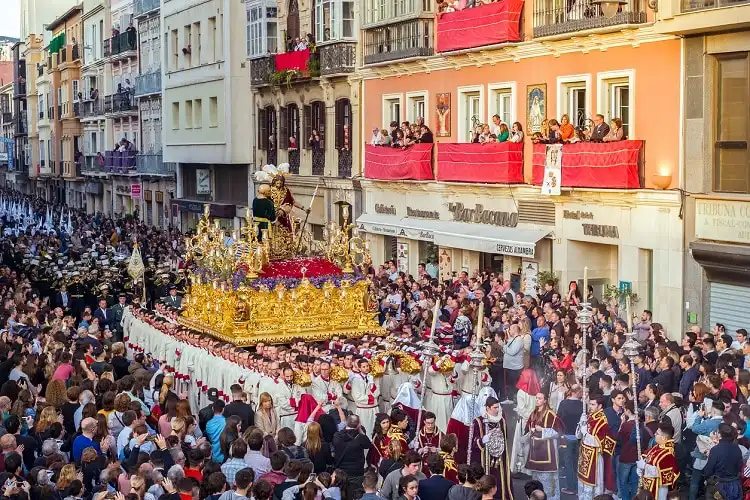
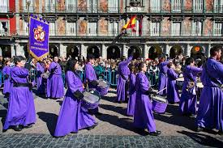

Na Espanha, a Páscoa é celebrada com muita intensidade religiosa, principalmente durante a Semana Santa. O país é conhecido por suas procissões impressionantes, em que grupos religiosos caminham pelas ruas carregando imagens sagradas, velas e cruzes. Essas celebrações atraem muitas pessoas e são vistas como uma demonstração de fé e respeito.

As procissões espanholas são acompanhadas por músicas, roupas tradicionais e momentos de silêncio e reflexão. Em várias cidades, como Sevilha e Málaga, a Semana Santa é uma das épocas mais importantes do ano. Muitas pessoas viajam para assistir às cerimônias e participar desse momento religioso tão marcante.

Além da religiosidade, a Páscoa na Espanha também inclui encontros familiares e comidas típicas. É comum que as famílias se reúnam para refeições especiais e para aproveitar o feriado juntas. Dessa forma, a Páscoa espanhola mistura tradição, emoção, fé e cultura popular.